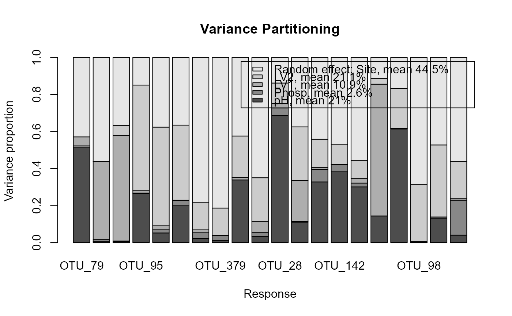

Calculates variance partitioning for gllvm object with function varPartitioning().
Function plotVarPartitioning() (alias plotVP()) plots the results of variance partitioning of a fitted gllvm.
# S3 method for class 'gllvm'
varPartitioning(
object,
group = NULL,
groupnames = NULL,
adj.cov = TRUE,
grouplvs = FALSE,
...
)
plotVarPartitioning(
VP,
main = "Variance Partitioning",
xlab = "Response",
ylab = "Variance proportion",
legend.text = NULL,
...
)
plotVP(VP, ...)an object of class 'gllvm'.
a vector of integers identifying grouping of X covariates, the default is to use model terms formula and lv.formula.
a vector of strings given as names for the groups defined in group
logical, whether or not to adjust co-variation within the group
logical, whether or not to group latent variables to one group
additional graphical arguments passed to the barplot function
a variance partitioning object for a gllvm produced by function varPartitioning.
main title
a label for the x axis.
a label for the y axis.
a vector of names for the groups, as a default 'groupnames' from varPartitioning. If FALSE, legend not printed.
Variance for the linear predictor for response j can be calculated as
$$Var(\eta_j) = \sum_k \beta_{jk}^2*var(z_{.k}) + 2 \sum_{(k1=1,...,K-1)} \sum_{(k2=k1+1,...,K)} \beta_{j(k1)}\beta_{j(k2)} Cov(Z_{.k1},Z_{.k2}) , $$
where \(z_{.k}\) is a vector consisting of predictor/latent variable/row effect etc values for all sampling units i. If \(z_{.k}\)s are not correlated, covariance term is 0 and thus the variance explained of a response j for predictor \(z_{.k}\) is given as \(\beta_{jk}^2*var(z_{.k})/Var(\eta_j)\).
In case of correlated predictors, it is advised to group them into a same group. The variance explained is calculated for the correlated group of predictors together and adjusted with the covariance term.
# Extract subset of the microbial data to be used as an example
data(microbialdata)
X <- microbialdata$Xenv
y <- microbialdata$Y[, order(colMeans(microbialdata$Y > 0),
decreasing = TRUE)[21:40]]
fit <- gllvm(y, X[,1:3], formula = ~ pH + Phosp, family = poisson(),
studyDesign = X[,4:5], row.eff = ~(1|Site))
VP <- varPartitioning(fit)
plotVarPartitioning(VP)

if (FALSE) { # \dontrun{
# Plot the result of variance partitioning
plot(VP, col = palette(hcl.colors(5, "viridis")))
} # }